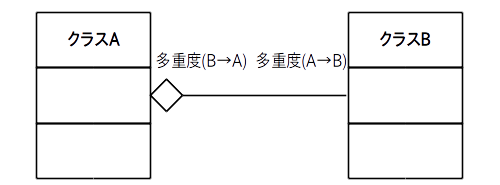

ここでは関連の一種である集約について学びます。
集約は「一方のクラスがもう一方のクラスを所有している」あるいは「一方のクラスはもう一方のクラスの一部である」などの主従関係を明確に示すために使われます。
この集約をクラス図で表す場合は図1の様に所有者側のクラスに中抜きのダイヤマークを付けます。
※ 中抜きダイヤマークばかりになるとクラス図が見辛くなるので主従関係が明らかな場合は中抜きダイヤマークを省略することも多いです
図1: 集約のクラス図
この関係を英語で書くと
A has a B ( A は B を所有している)
または
B is part of A ( B は A の一部である)
となりますので集約は別名「has-a 関係」とか「part-of 関係」と言います。
例えば、前のページで挙げた関連の例の場合、
「ORANGE は MyWorld を所有している」または「MyWorld は ORANGE の一部である」
という解釈はSFでもなければ変なので普通は
「MyWorld は ORANGE を所有している」または「ORANGE は MyWorld の一部である」
と解釈して良いでしょう。
従って図2の様に集約を使って明確に MyWorld が ORANGE の所有者であることを示せます。
なお多重度より MyWorld は ORANGE を 4 つ所有しているという事も分かります。
図2: 集約のクラス図の例

さてこれで MyWorld と ORANGE の主従関係が明らかになりましたので、MyWorld のコードは次のソース1の様に書くことが出来ます。
集約の表現方法は色々ありますが、ソース1の様に所有者側のクラス(MyWorld)のフィールドとして所有される側のクラス(ORANGE)のインスタンスが定義されることが多いです。
MyWorld は ORANGE を 4 つ所有していますので、ORANGE クラスのフィールドを 4 つ定義しています。
public class MyWorld{
private ORANGE orange0;
private ORANGE orange1;
private ORANGE orange2;
private ORANGE orange3;
// getter
public ORANGE get_orange0(){ return orange0; }
public ORANGE get_orange1(){ return orange1; }
public ORANGE get_orange2(){ return orange2; }
public ORANGE get_orange3(){ return orange3; }
// コンストラクタ
public MyWorld()
{
orange0 = new ORANGE(0);
orange1 = new ORANGE(1);
orange2 = new ORANGE(2);
orange3 = new ORANGE(3);
}
}
なおフィールドを 4 つ追加したので、図2は次の図3の様に変わります。
図3: ソース 1 のクラス図

{kind=link}